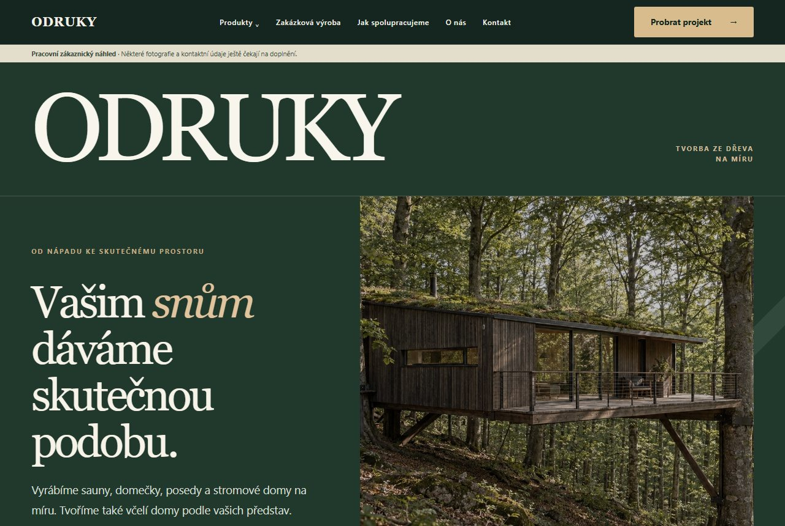
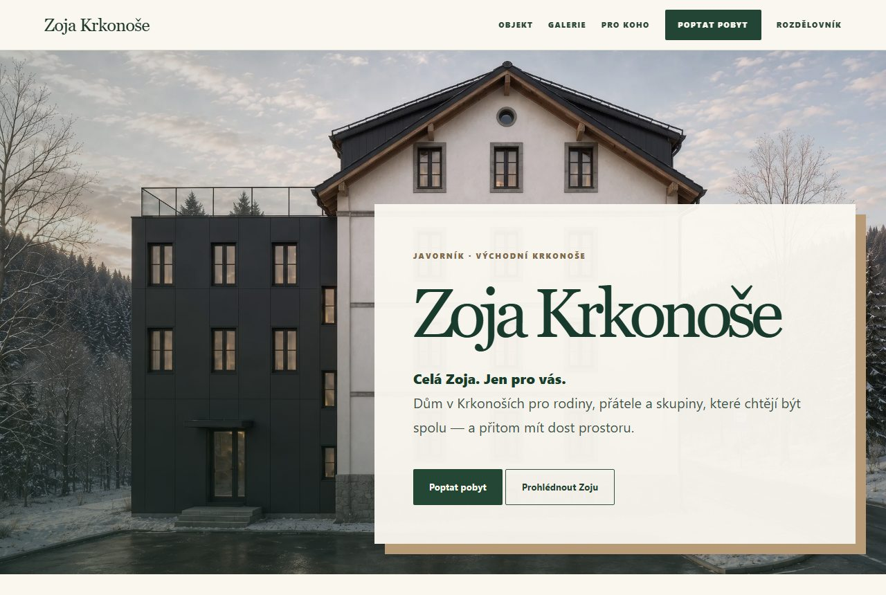
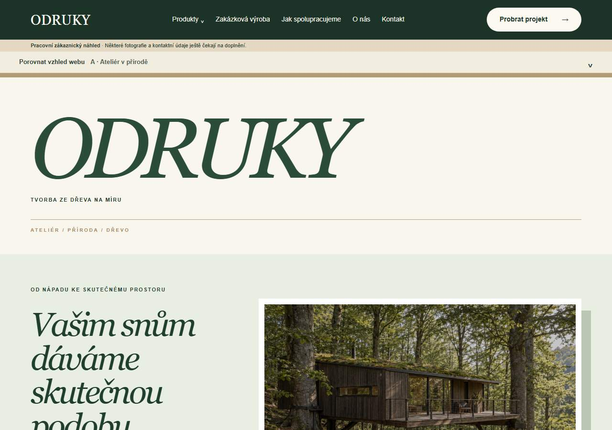
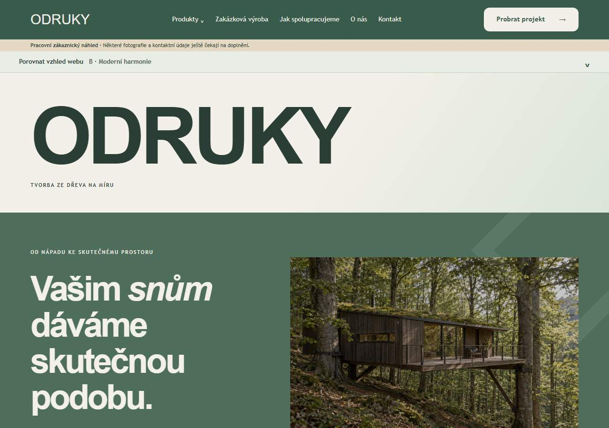
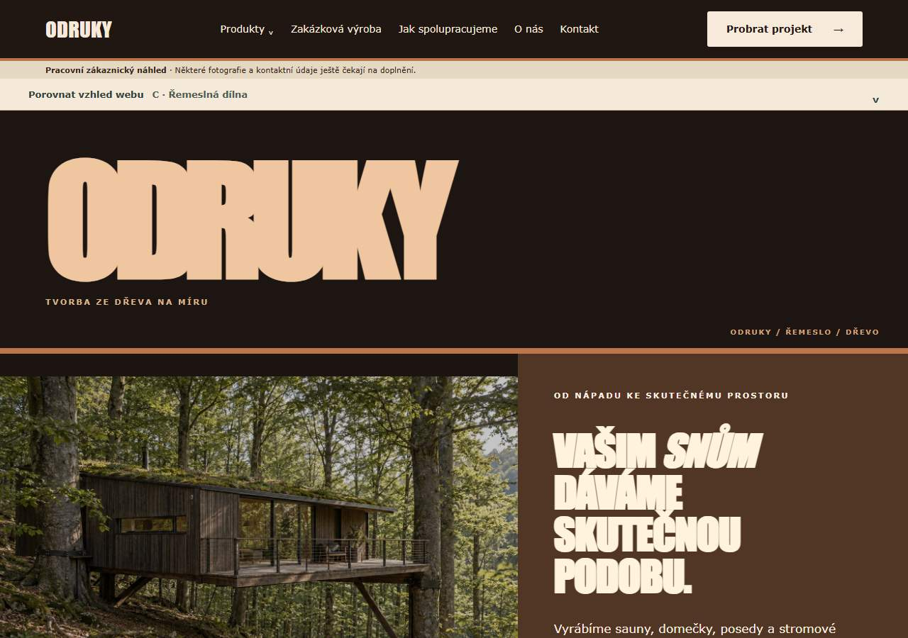
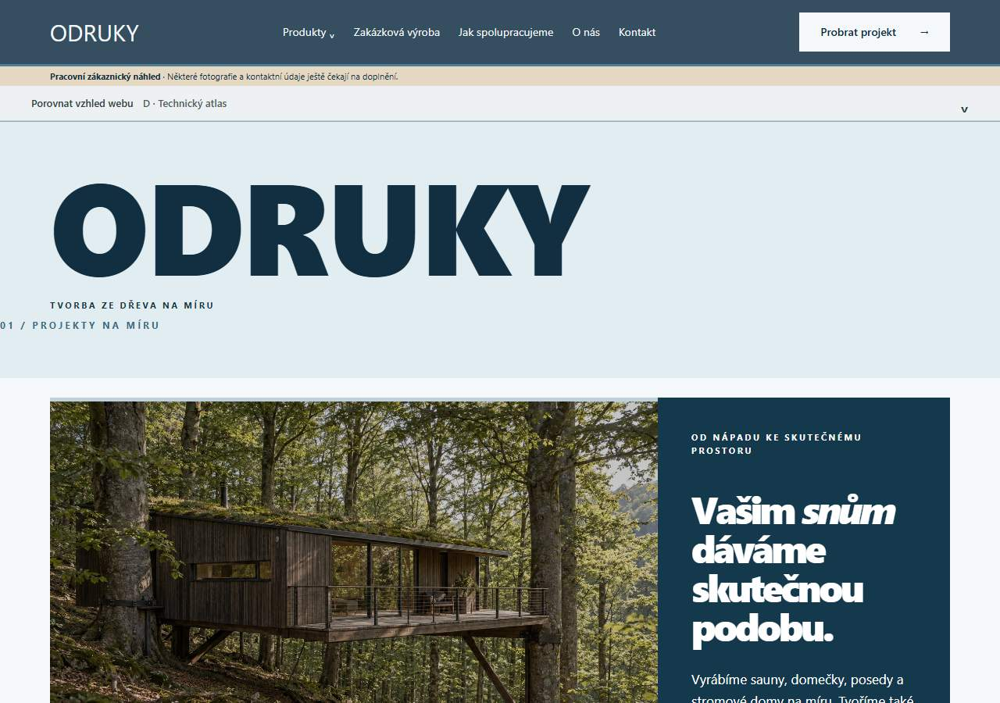
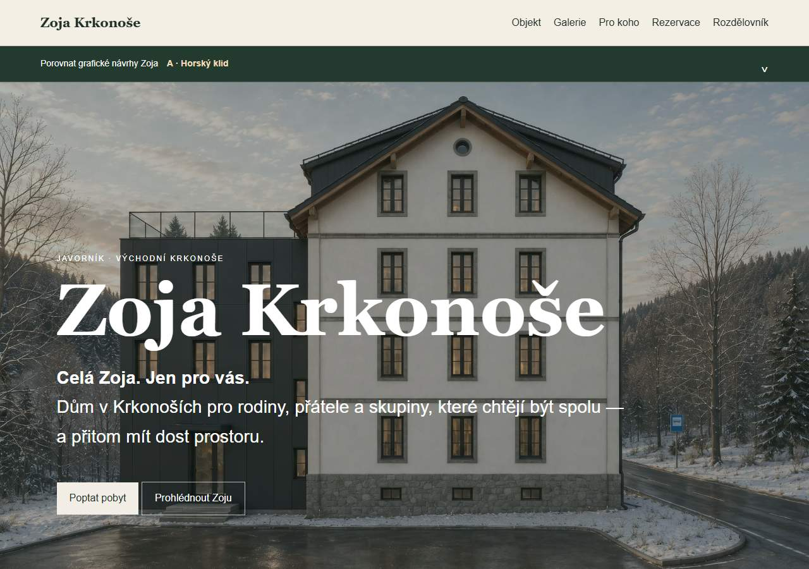
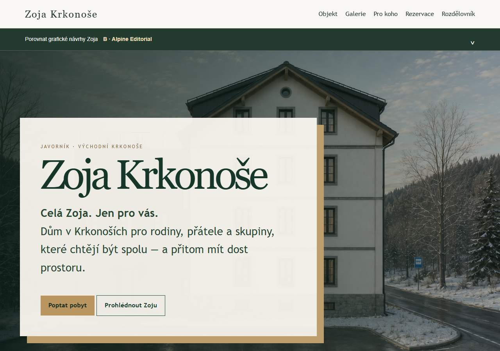
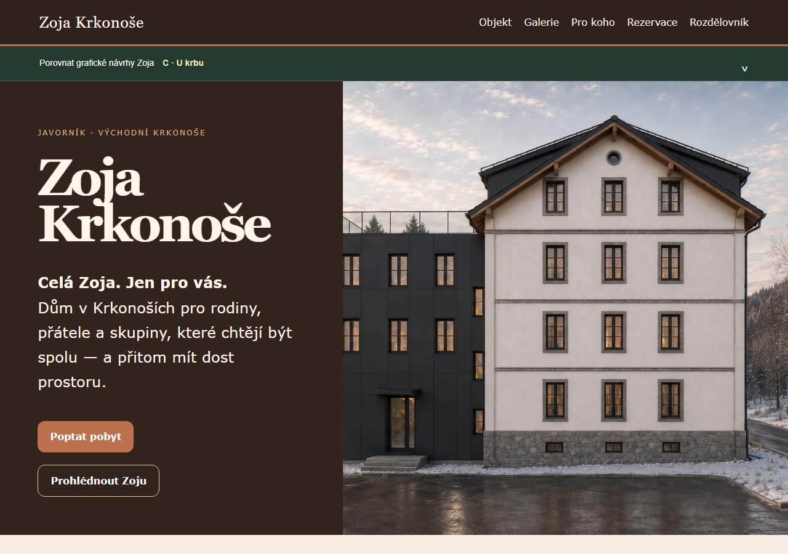
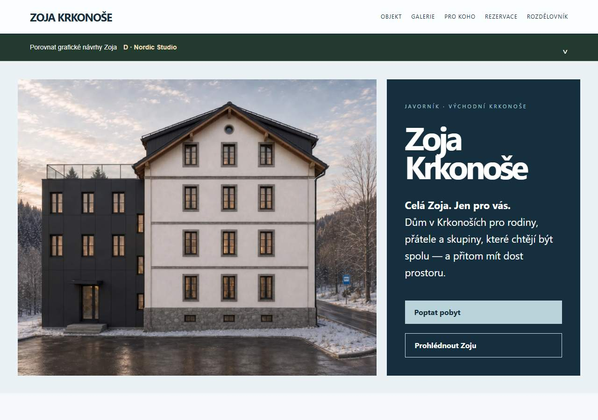

Další generace webů / P2
Dva nové profesionální prototypy
Tyto dva návrhy stojí vedle původních čtyř grafických variant každého webu. Pracují se stejným skutečným obsahem a schválenými médii; původní varianty zůstávají zachované níže.

ODRUKY — Ateliér tvorby ze dřeva
Architektonická identita postavená na skutečných výrobcích, výrazné typografii a přehledných cestách k poptávce.
Otevřít nový funkční návrh ↗
ZOJA — Soukromý horský dům
Atmosférická prezentace celého objektu s důrazem na fotografii, soukromí, dispozice a přímou poptávku.
Otevřít nový funkční návrh ↗Zakázková výroba ze dřeva
Odruky
Čtyři odlišné způsoby prezentace realizací, produktů a práce na míru.

VARIANTA AAteliér v přírodě
Světlý obrazový magazín s velkorysou typografií.

VARIANTA BModerní harmonie
Střídmý referenční návrh v přírodních barvách.

VARIANTA CŘemeslná dílna
Tmavé dřevo, měď a důrazná typografie.

VARIANTA DTechnický atlas
Modrošedá architektonická grafika a modulární katalog.
Pronájem celého horského objektu
Zoja Krkonoše
Čtyři rozdílné atmosféry jednoho místa, se stejnými fotografiemi a videem.

VARIANTA AHorský klid
Přírodní klasika pro prezentaci objektu a galerie.

VARIANTA BAlpine Editorial
Panoramatický snímek se světlým redakčním panelem.

VARIANTA CU krbu
Teplé odstíny a kompozice ve stylu horské chaty.

VARIANTA DNordic Studio
Severský minimalismus a architektonická přesnost.